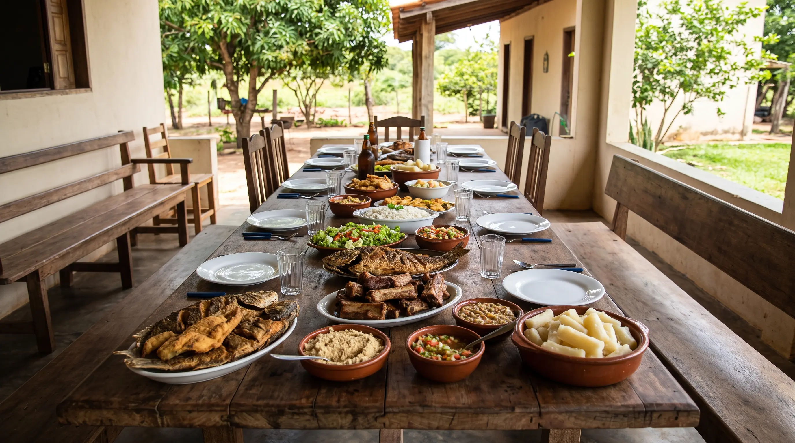

Quanto Peixe Comprar para Churrasco e Almoço: Guia Prático de Quantidades por Pessoa

Organizar um almoço de família, um aniversário ou um churrasco entre amigos envolve muitas decisões, mas poucas geram tanta dúvida quanto esta: quanto de carne devo comprar? Comprar de menos arrisca deixar convidados com fome; comprar demais gera desperdício e gasto desnecessário. Para peixes e carnes de porco, que variam bastante em rendimento, o desafio é ainda maior, porque um quilo de peixe inteiro não rende o mesmo que um quilo de filé. Neste guia, a equipe da Peixaria Rio Paraguai explica como calcular com segurança, e você pode confirmar os números usando a calculadora de churrasco e almoço da nossa página de produtos.
O que determina a quantidade
Antes dos números, entenda os fatores que mudam o cálculo:
- Tipo de corte: cortes com osso, espinha e pele rendem menos carne aproveitável do que cortes limpos.
- Perfil dos convidados: adultos comem mais que crianças; grupos mais jovens e eventos ao ar livre tendem a consumir mais.
- Variedade do cardápio: quanto mais opções (carnes, saladas, massas, sobremesas), menos cada pessoa consome de cada item.
- Duração do evento: encontros de várias horas pedem uma porção extra.
- Prato principal ou complemento: se a carne é a estrela ou se divide o espaço com outras.
Tabela de referência por pessoa
Esta é a base usada pela nossa calculadora e que consideramos adequada para uma refeição principal com acompanhamentos (arroz, mandioca, farofa e salada):
- Peixe inteiro ou em postas (com osso e espinha): cerca de 500 g por adulto e 250 g por criança.
- Peixe em filé (sem espinha): cerca de 350 g por adulto e 175 g por criança.
- Porco com osso (costela, suan): cerca de 500 g por adulto e 250 g por criança.
- Porco sem osso (pernil, lombo): cerca de 350 g por adulto e 175 g por criança.
Em um churrasco com várias carnes, reduza esses números em 30% a 40% para cada item e some as porções. Um exemplo: se o evento terá peixe, costela e linguiça, aproximadamente 150 a 200 g de cada uma por adulto já é suficiente.
Exemplos práticos
Almoço de domingo com peixe, 10 adultos e 4 crianças
Se o prato principal for pintado em postas: 10 × 500 g = 5 kg para os adultos, mais 4 × 250 g = 1 kg para as crianças. Total: 6 kg. Com filé, o total cai para cerca de 4,2 kg, que arredondamos para 4,5 kg.
Churrasco para 20 adultos, com peixe e porco
Sugestão: 3,5 kg de ventrecha de pacu (175 g por pessoa), 4 kg de costela de porco (200 g por pessoa) e 2 kg de linguiça (100 g por pessoa), mais acompanhamentos. Isso totaliza cerca de 475 g de proteína por pessoa, adequado para uma refeição completa, com sobra mínima.
Confraternização com muitas crianças
Crianças comem menos carne, mas gostam de peixes sem espinhas. Para grupos infantis, priorize filés de tilápia ou pintado, e calcule 150 a 200 g por criança de até 10 anos.
Peixe inteiro: não esqueça o rendimento
Quando o peixe é comprado inteiro, a cabeça, as vísceras, as escamas e a espinha são descartados ou aproveitados em caldos. Em média, o rendimento em carne é de 40% a 50% do peso total em peixes de escama e de 55% a 60% em peixes de couro limpos. Por isso, 1 kg de peixe inteiro e sem limpeza serve em torno de 2 pessoas, enquanto 1 kg de filé serve 3 pessoas. Se você pretende aproveitar a carcaça para caldos, o aproveitamento total aumenta.
Como escolher o corte conforme o evento
- Churrasco na brasa: ventrecha de pacu e tambatinga, postas de pintado e costela de porco. Cortes com gordura e osso resistem bem ao calor.
- Almoço à mesa: postas de pintado ao forno, moqueca e mojica funcionam bem.
- Evento com crianças e idosos: prefira filé sem espinhas.
- Evento grande: combine dois ou três cortes, para variar e para reduzir o risco de faltar o item mais disputado.
Como encomendar com antecedência
Peixe fresco depende da disponibilidade do dia, especialmente em épocas de defeso. Por isso:
- Faça a encomenda com 2 a 3 dias de antecedência para eventos de mais de 10 pessoas.
- Informe o número de adultos e crianças, o tipo de corte e a data de retirada.
- Combine se prefere o peixe limpo, em postas ou em filé; o corte é feito na hora.
- Leve caixa térmica para o transporte, principalmente em dias quentes.
Se optar por produto congelado, veja como descongelar peixe corretamente para evitar problemas no dia do evento.
Margem de segurança: quanto sobrar?
Uma pequena sobra é desejável, mas não deve passar de 10%. Em eventos com muitos homens adultos, comida e bebida em abundância ou duração longa, some 10% a 15%. Em reuniões de poucas horas, com cardápio variado, o número da tabela basta. Sobras de peixe assado podem virar bolinhos, recheio de pastel ou saladas no dia seguinte, mas guarde sob refrigeração em até 2 horas após servir e consuma em até 24 horas.
Resumo rápido
- Peixe com osso: 500 g por adulto, 250 g por criança.
- Peixe em filé ou porco sem osso: 350 g por adulto, 175 g por criança.
- Porco com osso: 500 g por adulto, 250 g por criança.
- Com várias carnes no cardápio, divida a quantidade entre elas.
- Arredonde para cima em 0,5 kg e confirme o estoque pelo WhatsApp.
Com essas referências e o apoio da nossa calculadora, você encomenda com confiança e foca no que realmente importa: aproveitar a companhia de quem está à mesa.
Fale com a Peixaria Rio Paraguai
Atendemos pelo WhatsApp (65) 99632-0873 e presencialmente na Rua Bom Jardim, 379, no Centro de Cáceres-MT. Consulte a disponibilidade do dia, escolha o corte e combine a retirada.